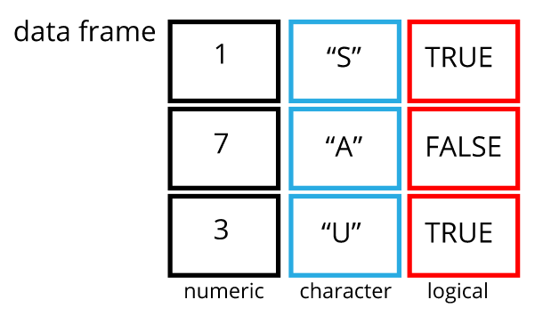
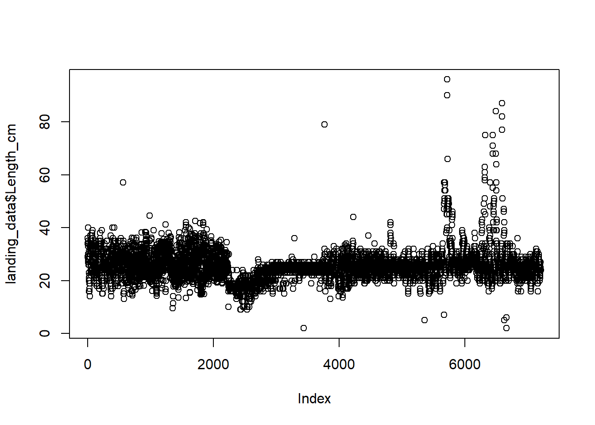

Empezando por los datos
Dataframes
Un dataframe es la representación de los datos en formato de una tabla donde las columnas son vectores que tienen todos la misma longitud. Los dataframe son análogos a las hojas de cálculos de un documento Excel, con una importante diferencia: Las columnas son vectores y cada una debe contener un único tipo de dato (por ejemplo, caracteres, enteros o factores). Por ejemplo, a continuación se muestra una figura que representa un marco de datos que comprende un vector numérico, uno de caracteres y uno lógico.
knitr::include_graphics("docs/imagen/data_frame.PNG")
Los dataframe son utilizados para el procesamiento de datos, aplicar
técnicas estadísticas y visualización. Estos pueden ser creados a mano
pero usualmente son importados desde la web o disco duro mediante la
función read_csv o read_table.
Paqueterías
El primer paso para iniciar con cualquier tipo de análisis es cargar en el entorno de RStudio las paqueterías que usaremos durante nuestros análisis de datos. Cargar paqueterías te permite usar funciones poderosas que no son incluidos en las funciones básicas de R.
Para los análisis del presente curso de capacitación usaremos la
paqueteria tidyverse que en realidad cargan un grupo de
paqueterías útiles que incluyen tidyr, dplyr,
readr y ggplot2. tidyr y
dplyr son paqueterías muy útiles para manipular datos,
readr es genial para importar datos como archivos
csv, mientras que ggplo2 es uno de los mejores
paquetes para vizualización de datos. lubridate es otro
paquete muy útil cuando se trabaja con fechas y horas. Aprenda más de la
colección de paquetes que conforman el universo tidyverse
here.
Importando datos
Lo que haremos a continuación será importar los datos desde el
computador a la memoria de R. Para ello utilizaremos la función
read_csv del paquete readr, que forma parte
del universo tidyverse. Cuando
se instala y ejecuta tidyverse en el entorno de R
(library(tidyverse)) se instalan las principales
paqueterías empleadas en la mayoría para análisis de datos (incluido
readr).
En primer lugar, cree una nueva carpeta en su directorio de trabajo llamado data. A continuación descargue el siguiente archivo en su ordenador:
Hacer click derecho en el link y guárdelo en su carpeta data
Importemos este conjunto de datos en R y determinemos su estructura. La base de datos corresponde a los desembarques reportados por la flota pesquera para la especie Caesio cuning. Utilizaremos estos datos para crear histogramas de frecuencia de tallas que describan la estructura de tallas de la población, así como las tendencias de las capturas y la CPUE.
# Cargando paqueterías
library(tidyverse)## ── Attaching packages ─────────────────────────────────────── tidyverse 1.3.2 ──
## ✔ ggplot2 3.3.6 ✔ purrr 0.3.4
## ✔ tibble 3.1.8 ✔ dplyr 1.0.10
## ✔ tidyr 1.2.1 ✔ stringr 1.4.1
## ✔ readr 2.1.3 ✔ forcats 0.5.2
## ── Conflicts ────────────────────────────────────────── tidyverse_conflicts() ──
## ✖ dplyr::filter() masks stats::filter()
## ✖ dplyr::lag() masks stats::lag()library(lubridate)##
## Attaching package: 'lubridate'
##
## The following objects are masked from 'package:base':
##
## date, intersect, setdiff, union# Importando datos
landing_data <- read_csv("data/sample_landings_data_raw.csv")## Rows: 7214 Columns: 8
## ── Column specification ────────────────────────────────────────────────────────
## Delimiter: ","
## chr (3): dat, gr, sp
## dbl (5): yy, trip, effort, l_cm, w_cm
##
## ℹ Use `spec()` to retrieve the full column specification for this data.
## ℹ Specify the column types or set `show_col_types = FALSE` to quiet this message.landing_data## # A tibble: 7,214 × 8
## yy dat trip effort gr sp l_cm w_cm
## <dbl> <chr> <dbl> <dbl> <chr> <chr> <dbl> <dbl>
## 1 2003 4/30/03 1 10 Trap Caesoi cunning 36 1089.
## 2 2003 4/30/03 1 10 trap Caesio cuning 29 565.
## 3 2003 4/30/03 1 10 Trap Caesio cuning 34 916.
## 4 2003 4/30/03 1 10 Trap Caesio cuning 36 1089.
## 5 2003 4/30/03 1 10 Trap Caesio cuning 34 916.
## 6 2003 4/30/03 1 10 Trap Caesoi cunning 28 508.
## 7 2003 4/30/03 1 10 Trap Caesio cuning 30 627.
## 8 2003 4/30/03 1 10 Trap Caesio cuning 27 455.
## 9 2003 4/30/03 1 10 Trap Caesio cuning 33 837.
## 10 2003 4/30/03 1 10 Trap Caesio cuning 35 1000.
## # … with 7,204 more rowsTenga en cuenta que read_csv() en realidad carga los
datos como un formato tibble que no es más que otra forma
de referirse a una versión bonita y limpia de estructurar los datos.
Este formato se utiliza automáticamente cuando se leen los archivos con
read_csv. Siempre es recomendable revisar el total de filas
y columnas del dataframe. En este archivo, las filas básicamente
representan las observaciones individuales de las capturas de peces. Las
columnas incluyen las variables asociadas a este proceso (año y fecha en
que se recogió la medición, el identificador de la salida de pesca, las
horas de pesca por salida, aparejo de pesca, especie, talla y el peso
del pez).
Nota
read_csv asume que los campos estan delimitados por
comas. Sin embargo, en varios países se utiliza la coma como separador
de decimales y el punto y coma (;) como delimitador de campos. Si desea
leer este tipo de archivos en R, puede utilizar la función
read_csv2. Se comporta exactamente igual que
read_csv pero utiliza parámetros diferentes para el decilas
y los separadores de campo. Si se trabaja con otro formato, ambos pueden
ser especificados por el usuario. Consulte la ayuda de
read_csv() escribiendo ?read_csv para obtener
más información. También existe la función read_tsv para
archivos de datos separados por tabulaciones, y read_delim
permite especificar más detalles sobre la estructura de su archivo.
Proceso de depuración
La observación y depuración de los datos para identificar y corregir cualquier error potencial (falta de datos, errores tipográficos, etc) es un paso importante antes de realizar cualquier análisi. Esto se conoce como control de calidad. En esta sección daremos una visión general de los pasos que deben seguir para filtrar adecuadamente sus datos y se emplearán algunas funciones que pueden resultar útiles a la hora de limpiar sus datos. Si su conjunto de datos es pequeño y no se actualiza con frecuencia, la selección y la limpieza de los datos puede ser más fácil en Microsoft Excel, ordenando y filtrando las columnas de datos. Sin embargo, se recomienda que realice la limpieza de sus datos utilizando R. Esto tiene la ventaja de que todos los cambios realizados en un conjunto de datos sin procesar se registrarán en un script que es reproducible, lo que puede ser especialmente útil cuando se trabaja con grandes conjuntos de datos, si desea modificar rápidamente cualquier paso de su proceso de limpieza, o si recibe datos adicionales.
Estructura de datos
En primer lugar, vamos a dar a nuestras columnas unos títulos más
descriptivos. Podemos renombrar las columnas utilizando la función
rename del paquete dplyr. También vamos a convertir la
variable Date a un formato de fecha utilizando la función
mdy del paquete lubridate.
landing_data <-
landing_data %>%
# Renombrando variables
rename(Year = yy,
Date = dat,
Trip_ID = trip,
Gear = gr,
Species = sp,
Length_cm = l_cm,
Weight_g = w_cm) %>%
# Transformando la columna Date a formato fecha
mutate(Date = mdy(Date))Valores NAs
Los valores NAs pueden generar problemas al momento de realizar
operaciones aritméticas como la suma, resta, multiplicación y división.
Por lo que resulta fundamental identificarlos. A continuación vamos a
corroborar si en nuestra base de datos existen valores NA utilizando la
función complete_cases y el operador lógico de negación
!.
landing_data[!complete.cases(landing_data),]## # A tibble: 3 × 8
## Year Date Trip_ID effort Gear Species Length_cm Weight_g
## <dbl> <date> <dbl> <dbl> <chr> <chr> <dbl> <dbl>
## 1 2003 2003-05-01 10 10 <NA> Caesio cuning 19 157.
## 2 2003 2003-05-01 10 10 Handline Caesio cuning 19 NA
## 3 2004 2004-12-18 NA 9 Trap Caesio cuning 20.1 186.Nuestra base de datos tiene 3 filas que reportan valores
NA. Si deseamos eliminar estas observaciones se puede
utilizar la función na.omit() que eliminará cualquier fila
que tenga presencia de NA.
landing_data <- na.omit(landing_data)
landing_data## # A tibble: 7,211 × 8
## Year Date Trip_ID effort Gear Species Length_cm Weight_g
## <dbl> <date> <dbl> <dbl> <chr> <chr> <dbl> <dbl>
## 1 2003 2003-04-30 1 10 Trap Caesoi cunning 36 1089.
## 2 2003 2003-04-30 1 10 trap Caesio cuning 29 565.
## 3 2003 2003-04-30 1 10 Trap Caesio cuning 34 916.
## 4 2003 2003-04-30 1 10 Trap Caesio cuning 36 1089.
## 5 2003 2003-04-30 1 10 Trap Caesio cuning 34 916.
## 6 2003 2003-04-30 1 10 Trap Caesoi cunning 28 508.
## 7 2003 2003-04-30 1 10 Trap Caesio cuning 30 627.
## 8 2003 2003-04-30 1 10 Trap Caesio cuning 27 455.
## 9 2003 2003-04-30 1 10 Trap Caesio cuning 33 837.
## 10 2003 2003-04-30 1 10 Trap Caesio cuning 35 1000.
## # … with 7,201 more rowsVuelve a evaluar la estructura de datos y comprueba que las 3 filas que reportaron valores NA fueron eliminados. Es posible que no siempre se desee eliminar los valores NA de un conjunto de datos si desea mantener la fila con las otras observaciones. Sin embargo, incluso si desea mantener las observaciones con valores NA en el conjunto de datos, sigue siendo bueno identificar los NA y saber dónde se producen para asegurarse de que no crean problemas durante los análisis.
Tipos
Podemos comprobar si existen errores tipográficos utilizando la
función unique, que nos muestra todos los valores únicos de
una variable. Como ejemplo veamos la variable Gear.
unique(landing_data$Gear)## [1] "Trap" "trap" "Muroami" "Handline" "Gillnet" "Trolling" "Speargun"La variable Gear reporta 7 aparejos de pesca. Sin
embargo, sabemos que en el conjunto de datos sólo debería haber 6 dado
que “trap” aparece dos veces porque las mayúsculas son inconsistentes.
La “t” minúscula hace que R lo identifique como un valor único. Este
problema es muy común en muchas bases de datos y se puede solucionar
facilmente si nos aseguramos que todos nuestros valores en la variable
Gear sean consistentes por ejemplo que todas las letras de
los elementos de la variable Gear sean escritas en
minúsculas o mayúsculas. Para tal fin podemos usar la función
tolower() o toupper respectivamente.
landing_data <-
landing_data %>%
mutate(Gear = tolower(Gear))
unique(landing_data$Gear)## [1] "trap" "muroami" "handline" "gillnet" "trolling" "speargun"Es recomendable explorar todas las variables categóricas de una base
de datos con la función unique(). Veamos otro ejemplo con
la variable Species:
unique(landing_data$Species)## [1] "Caesoi cunning" "Caesio cuning"La variable Specie muestra 2 valores unicos pero sabemos
que en nuestra base de datos debería reportarse sólo a una especie. Aquí
probablemente lo que haya ocurrido sea un problema de digitación. Sin
embargo debemos corroborarlos. Lo que podemos hacer inicialmente es
identificar cuantas veces aparecen cada uno de esto dos elementos en la
base de datos utilizando la función table() a la variable
Species.
table(landing_data$Species)##
## Caesio cuning Caesoi cunning
## 7209 2Debido a que sólo aparecen dos observaciones de Caesoi
cunning podemos estar más seguros de que corresponde a un error de
digitación frente a la especie Caesio cuning que aparece 7209
veces. Este problema se corrige rapidament reemplazando el elemento
correcto mediante las funciones mutate() y
replace
landing_data <-
landing_data %>%
mutate(Species = replace(Species,
Species == "Caesoi cunning", "Caesio cuning"))
unique(landing_data$Species) ## [1] "Caesio cuning"Ahora sólo tenemos un valor de especie en nuestra variable
Species, lo cual es correcto. Los valores únicos de todas
las columnas categóricas (es decir, el tipo de arte, el nombre de la
especie, etc.) deben examinarse durante el proceso de selección y
limpieza de datos.
Errores
Los errores en los valores numéricos pueden deberse a errores
tipográficos durante la introducción de datos o a un error durante el
proceso de colección de datos (por ejemplo, puede que la balanza se haya
roto o no se haya puesto a cero antes del pesaje). Para ver el rango y
la distribución de una variable numérica, se puede utilizar la función
summary.
summary(landing_data$Length_cm)## Min. 1st Qu. Median Mean 3rd Qu. Max.
## 2.00 23.00 25.00 25.81 27.00 2400.00Parece que tenemos un valor máximo de longitud que es de un orden de magnitud superior a los valores de la media y la mediana. La visualización de los datos numéricos es otra gran manera de examinar los datos continuos e identificar los contornos de los datos que pueden ser causados por errores en el conjunto de datos:
plot(landing_data$Length_cm)
Vemos claramente que hay un valor atípico en nuestros datos (esquina
superior izquierda del gráfico). No estamos seguros de cómo se ha
producido este error, pero sabemos que no es correcto. De hecho, sabemos
que el tamaño máximo posible de nuestra especie es de 100 cm. Sabemos
que se ha producido un error de medición o de escritura en los valores
de Length_cm que superan los 100 cm. Podemos eliminar estos
datos erróneos incluyendo únicamente las observaciones en nuestro
conjunto de datos con valores superiores a 100 cm (tamaño máximo de la
especie) utilizando la función de filtro:
landing_data <-
landing_data %>%
filter(Length_cm < 100)
plot(landing_data$Length_cm)
Ahora nuestros datos contienen observaciones de longitudes que se
encuentran en el rango de tallas de nuestra especie. Este proceso debe
realizarse para cada una de nuestras variables numéricas antes de
realizar cualquier análisis para identificar cualquier valor atípico y
eliminar cualquier dato erróneo. En este ejemplo, omitiremos este paso
para la columna Peso_g y Esfuerzo_horas.
Guardar archivo
Ahora que hemos completado la depuración de los datos procedemos a guardarlos en otro archivo. Para este proceso realizamos lo siguiente:
write_csv(landing_data, "data/sample_landings_data_clean.csv")Directorio de trabajo
Incluso con el uso de un proyecto de RStudio, puede der difícil
aprender a especificar las rutas de trabajo de los archivos. Para
hacernos la vida más simple, se desarrolló un paquete conocido como
here. El paquete here crea rutas relativas al
directorio de nivel superior (el proyecto RStudio). Estas rutas
relativas funcionan independientemente de donde se encuentre el archivo
fuente asociado dentro de su proyecto, como los proyectos de análisis
con datos e informes en diferentes subdirectorios. Esto es un contrate
importante con el uso de setwd() que depende de la forma en
que ordene sus archivos en su computador.
Monsters at a fork in the road, with signs saying here, and not here. One direction, not here, leads to a scary dark forest with spiders and absolute filepaths, while the other leads to a sunny, green meadow, and a city below a rainbow and a world free of absolute filepaths. Art by Allison Horst
Créditos de la imagen Allison Horst
# Cargando paqueterías
library(tidyverse)
# Importando datos
landing_data <- read_csv("data/sample_landings_data_raw.csv")## Rows: 7214 Columns: 8
## ── Column specification ────────────────────────────────────────────────────────
## Delimiter: ","
## chr (3): dat, gr, sp
## dbl (5): yy, trip, effort, l_cm, w_cm
##
## ℹ Use `spec()` to retrieve the full column specification for this data.
## ℹ Specify the column types or set `show_col_types = FALSE` to quiet this message.landing_data## # A tibble: 7,214 × 8
## yy dat trip effort gr sp l_cm w_cm
## <dbl> <chr> <dbl> <dbl> <chr> <chr> <dbl> <dbl>
## 1 2003 4/30/03 1 10 Trap Caesoi cunning 36 1089.
## 2 2003 4/30/03 1 10 trap Caesio cuning 29 565.
## 3 2003 4/30/03 1 10 Trap Caesio cuning 34 916.
## 4 2003 4/30/03 1 10 Trap Caesio cuning 36 1089.
## 5 2003 4/30/03 1 10 Trap Caesio cuning 34 916.
## 6 2003 4/30/03 1 10 Trap Caesoi cunning 28 508.
## 7 2003 4/30/03 1 10 Trap Caesio cuning 30 627.
## 8 2003 4/30/03 1 10 Trap Caesio cuning 27 455.
## 9 2003 4/30/03 1 10 Trap Caesio cuning 33 837.
## 10 2003 4/30/03 1 10 Trap Caesio cuning 35 1000.
## # … with 7,204 more rowsNota
Incluso con el uso de un proyecto de RStudio, puede der difícil
aprender a especificar las rutas de trabajo de los archivos. Para
hacernos la vida más simple, se desarrolló un paquete conocido como
here. El paquete here crea rutas relativas al
directorio de nivel superior (el proyecto RStudio). Estas rutas
relativas funcionan independientemente de donde se encuentre el archivo
fuente asociado dentro de su proyecto, como los proyectos de análisis
con datos e informes en diferentes subdirectorios. Esto es un contrate
importante con el uso de setwd() que depende de la forma en
que ordene sus archivos en su computador.
library(tidyverse)
library(here)## here() starts at C:/Users/angelo.aguilar/Desktop/projectsR/traininglanding_data_2 <- read_csv(
here("data", "sample_landings_data_raw.csv"),
na = "NULL"
)## Warning: One or more parsing issues, call `problems()` on your data frame for details,
## e.g.:
## dat <- vroom(...)
## problems(dat)## Rows: 7214 Columns: 8## ── Column specification ────────────────────────────────────────────────────────
## Delimiter: ","
## chr (3): dat, gr, sp
## dbl (5): yy, trip, effort, l_cm, w_cm
##
## ℹ Use `spec()` to retrieve the full column specification for this data.
## ℹ Specify the column types or set `show_col_types = FALSE` to quiet this message.Directorio trabajo
Incluso con el uso de un proyecto de RStudio, puede der difícil
aprender a especificar las rutas de trabajo de los archivos. Para
hacernos la vida más simple, se desarrolló un paquete conocido como
here. El paquete here crea rutas relativas al
directorio de nivel superior (el proyecto RStudio). Estas rutas
relativas funcionan independientemente de donde se encuentre el archivo
fuente asociado dentro de su proyecto, como los proyectos de análisis
con datos e informes en diferentes subdirectorios. Esto es un contrate
importante con el uso de setwd() que depende de la forma en
que ordene sus archivos en su computador.
Monsters at a fork in the road, with signs saying here, and not here. One direction, not here, leads to a scary dark forest with spiders and absolute filepaths, while the other leads to a sunny, green meadow, and a city below a rainbow and a world free of absolute filepaths. Art by Allison Horst
Créditos de la imagen Allison Horst
Antes de usar las funciones read_csv y
here, necesitaremos cargar la paquetería
tidyverse y here.